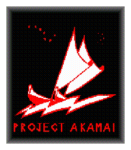
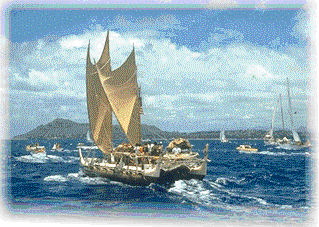
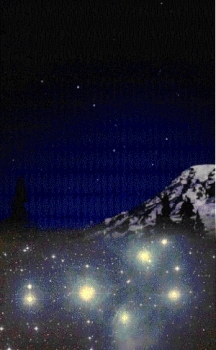

| THE
PROJECT AKAMAI LOGO IS SYMBOLIC OF A BOLD VISION - A VISION TO BRIDGE TIME
AND DISTANCE BARRIERS AND BRING STATE-OF-THE-ART MEDICAL CARE AND KNOWLEDGE
TO THE PACIFIC BASIN. THE BLACK BACKGROUND PORTRAYS AN OPEN UNCHARTED FRONTIER
FILLED WITH CHALLENGE, MYSTERY, AND OPPORTUNITY. RED AND WHITE ARE FAMILIAR
COLORS OF MEDICINE: RED SYMBOLIZES HUMAN LIFE AND THE BLOOD THAT BEATS THROUGH
THE COMPASSIONATE HUMAN HEART; WHITE REPRESENTS THE SPIRIT OF PURITY AND
SERVICE TO HUMANITY. |
 |
|  |
THE
CENTERPIECE OF THE AKAMAI LOGO IS THE HOKULEA CANOE - THE ARCHETYPE OF THE
POLYNESIAN VOYAGING SPIRIT SYMBOLIZING OUR SPIRIT AS WE EXPLORE TECHNOLOGIES
THAT CAN BRING HEALTH CARE TO THE FAR REACHES OF THE PACIFIC BASIN WHILE
OVERCOMING CHALLENGES TO REACH OUR GOAL. THE CANOE IS RIDING THE LIGHTENING
BOLT-SHAPED WAVE OF TECHNOLOGICAL DISCOVERY POWERED BY THE WINDS OF THE
INFORMATION AGE. |
| THE
STAR CLUSTER PLEIADES, IN THE UPPER RIGHT HAND CORNER, IS SYMBOLIC OF THE
HAWAIIAN ISLANDS AND SENATOR DANIEL K. INOUYE, WHOSE VISION HAS SHAPED THE
PROJECT'S GOALS AND IDEALS. THE BIG DIPPER CONSTELLATION, IN THE UPPER LEFT-HAND
CORNER, SYMBOLIZES ALASKA AND SENATOR TED STEVENS, WHOSE CONTINUED SUPPORT
WITH SENATOR INOUYE, GUIDE AND ENABLE THE EFFORT TO MOVE FORWARD. |
 |
 |
THE
PETROGLYPH-STYLE WRITING, TOGETHER WITH THE HOKULEA, REMINDS US OF OUR HAWAI'IAN
HERITAGE - THE PLACE WHERE AKAMAI BEGAN. |